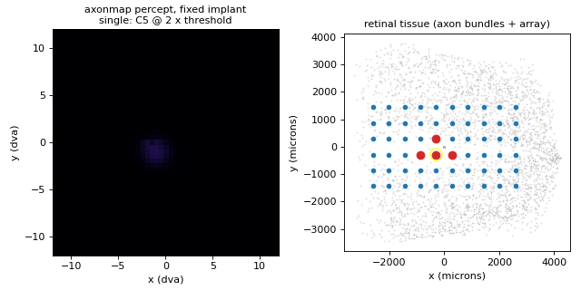
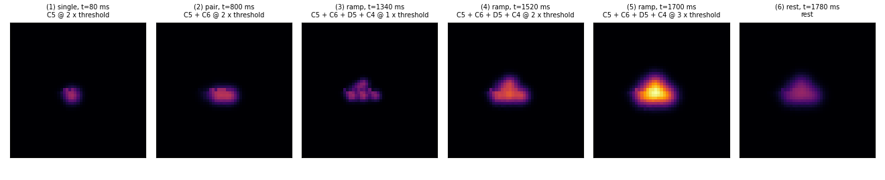
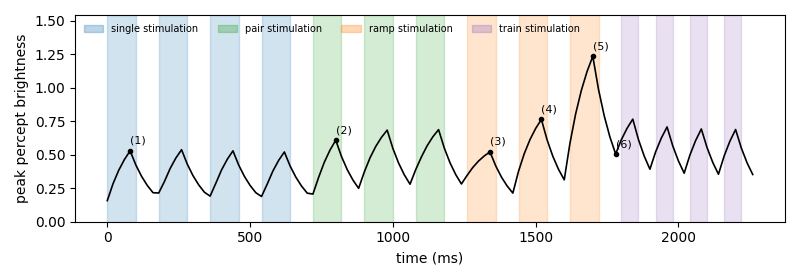

Axon map
Home · Getting started · Nomenclature · Models · References
Modality: brain2vision · Tissue: retinal
Paper
Jacob Granley, Michael Beyeler. A computational model of phosphene appearance for epiretinal prostheses. IEEE EMBC 2021. doi:10.1109/EMBC46164.2021.9629663
Spatial axon trajectories follow Beyeler et al. 2019 (doi:10.1038/s41598-019-45416-4).
What it does
Predicts phosphene appearance for epiretinal implants by activating nerve-fiber
bundles (streaks) and scaling brightness, size, and streak length from biphasic
pulse amplitude, frequency, and phase duration. Action.amp is in units of
threshold (typically 0.5–3.0).
Demo walkthrough
The Argus II array stays still while four neighbouring electrodes (C5, C6, D5, C4) receive singles, pairs, an amplitude ramp and a pulse train. If this is your first demo, read how to read the demos first.

What to look for

-
One electrode gives a short streak, not a round dot. Frame (1) is slightly stretched along the local nerve-fibre bundle. The model activates every axon that passes near the electrode, and each axon's contribution decays with its distance to the cell body:
\[ I(p) = \max_{q \in \text{axon}(p)} \sum_{e} F_\text{bright}\, \exp\!\Big(-\frac{d_e(q)^2}{2\rho^2 F_\text{size}}\Big)\, \exp\!\Big(-\frac{d_\text{soma}(q)^2}{2\lambda^2 F_\text{streak}}\Big) \]The first exponential is the spread around the electrode (\(\rho\)), the second is the spread along the axon (\(\lambda\)), which is what stretches the phosphene along the nerve-fibre bundle. With \(\lambda = 500\,\mu m\) the stretch is modest; a larger \(\lambda\) gives longer streaks (the
make animateclip sweeps \(\lambda\) to show this). -
Two electrodes merge into one shape. In frame (2) the two streaks overlap and add up (the \(\sum_e\) above), giving one wider, brighter phosphene rather than two separate dots.
-
More current mostly means bigger, not brighter. Frames (3) to (5) show the ramp. With a 0.45 ms pulse at 30 Hz, the effect models give:
Amplitude \(F_\text{bright}\) \(F_\text{size}\) effective \(\rho\) 1 × threshold 0.64 0.72 170 µm 2 × threshold 0.79 1.80 268 µm 3 × threshold 0.94 2.88 339 µm Size grows about 4× while \(F_\text{bright}\) grows only about 1.5×. The peak in the timeline still rises from 0.52 to 1.23, because bigger phosphenes from the four electrodes overlap more and their sum is larger. \(F_\text{streak}\) depends only on pulse duration, so the streak length stays the same across the ramp.
-
The percept lingers. Frame (6) is the last rest frame after the brightest pulse: the phosphene is dimmer but clearly still there.
Over time

- Every pulse rises and every rest decays with the same 100 ms leaky integrator (see fading). A 5-frame pulse gets to about 67% of its steady value, and a 4-frame rest keeps about 41%, so the curve never touches zero.
- In the pulse train the peaks drop from 0.77 to 0.69. This is not adaptation: the axon map has no memory. The first train pulse starts on top of the leftover light from the bright 3 × ramp; after that the curve settles into a repeating pattern.
Regenerate the clip and figures with make demos.
Usage
```python from sentionaut.core.config import Config from sentionaut.core.registry import build_components
cfg = Config(model="axonmap", implant="argusii") implant, topo, model = build_components(cfg) ```
Source: src/sentionaut/models/axonmap.py
The torch implementation, the parity check, the CPU and GPU timings, and the distilled world model are the next page: from the axon map to a world model.